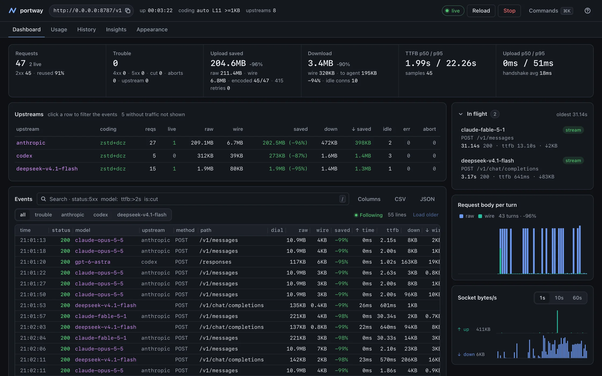
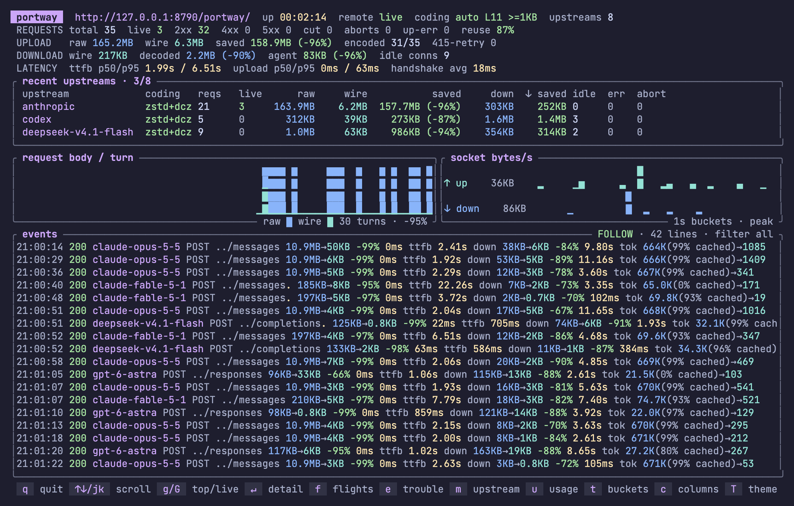

减少编程智能体的网络传输量。
Claude Code、Codex 等编程智能体每一轮都会重新发送不断增长的对话。Portway 以上一次请求为基础压缩下一次请求，减少传输到接收端的数据量。接收端还原原始请求，再转发给模型。
- 智能体发送的字节
- 13,877,261 B
- 仅用 zstd
- 3,114,150 B
- Portway 实际发出的字节
- 101,551 B
第 40 轮：智能体发送了 429,900 字节，实际发出的只有 1,029 字节。
在屏幕上看着字节变少
Portway 自带终端面板（portway --tui）和浏览器控制台（--web）。每个请求发出时，两者都会显示智能体发送的大小、实际经过网络的大小，以及耗时和 token 数。下面的画面截自真实的 Claude Code 和 Codex 会话。


安装，然后连接你的智能体
Homebrew 安装包已包含终端面板和浏览器控制台，无需 Rust 工具链。
-
安装 Portway。支持 macOS Apple 芯片和 Linux x86_64 / ARM64（glibc 2.28 或更高版本）。
brew install rath/tap/portway -
将 API 挂载配置保存为
portway.toml。然后启动 Portway 和浏览器控制台：# portway.toml host = "127.0.0.1" port = 8787 [upstreams] anthropic = "https://api.anthropic.com" codex = "https://chatgpt.com/backend-api/codex"portway --config ./portway.toml --web -
在另一个终端连接 Claude Code。 先安装 Claude Code 并正常登录。保持 Portway 运行，用以下命令为本次启动设置连接：
env ANTHROPIC_BASE_URL=http://127.0.0.1:8787/anthropic claude -
用独立配置文件连接 Codex。 先安装 Codex 并运行
codex login登录 ChatGPT。将以下内容保存到~/.codex/portway.config.toml。如果设置了CODEX_HOME，则保存在该目录中：model_provider = "portway" [model_providers.portway] name = "portway" base_url = "http://127.0.0.1:8787/codex" requires_openai_auth = true wire_api = "responses"然后在项目目录中运行：
codex -p portway此配置文件继承你平时的模型和偏好设置。直接运行
codex即可使用原来的 provider。两个 CLI 都使用现有凭据，Portway 不需要自己的 API 密钥。不要在这两个挂载 URL 后添加/v1。 -
检查第一个请求。 在 CLI 中发送一条简短消息，确认收到回复，且请求出现在 Portway 日志或浏览器控制台中。这种直接连接提供商的配置不会启用增量压缩。如果你已使用远程 Portway 服务器，请将客户端设置中的
127.0.0.1:8787替换为可访问的服务器地址。 -
添加接收端以启用增量压缩。在你服务前面的网关后面运行
portway receive，然后让发送端指向那个网关。接收端设置里有完整步骤。
同一个仓库还提供可嵌入的 Rust 库 portway-core，以及一个自带守护模式、报表、终端面板和浏览器控制台的 CLI。它把请求元数据记进 SQLite，绝不记录请求体、凭据或词典内容。
第 40 轮，就是第 39 轮加上 4 KB
编程智能体不在服务端保存任何状态。为了往前走一步，它会把系统提示词、此前的每一条消息、每一条工具调用结果重新发一遍，末尾再附上新产生的那几 KB。所以每个请求几乎都是上一个请求的副本。
- 第 1 轮263,966 B
- 第 2 轮268,145 B
- 第 3 轮272,556 B
- 第 20 轮344,723 B
- 第 39 轮425,707 B
- 第 40 轮429,900 B
于是会话的上传量随长度的平方增长。一旦这些上传要你等待、要你付费，差距很快就会显现：
- 部署在另一个区域的模型服务，或你自己运维的网关；
- 每一轮请求都要穿过 VPN 或 SSH 的远程开发机；
- 连着慢速、共享或按流量计费网络的笔记本。
短小的单次请求收效甚微——没有更早的请求可以充当基线。
上一轮成了词典
Portway 分两处运行：一是智能体旁边的发送端，二是它调用的服务前面的接收端。两端各自保留着上一次达成一致的请求体。发送端用它压缩下一个请求；接收端则在你的服务看到一个字节之前，把原文还原出来。
- 智能体Claude Code、Codex，以及任何能配置 base URL 的客户端
- 268,145 Blocalhost
- portway发送端，127.0.0.1:8787
- 1,054 B慢速链路
- portway receive由你掌控的主机
- 268,145 B同一数据中心
- 你的服务模型服务、网关或服务商 API
两端如何就基线达成一致
-
第 1 轮播下词典。这个请求以 zstd 压缩后发出，并带上
X-Dict-Store: 1。接收端解压后转发出去，把请求体留下。 -
接收端确认自己留了什么。响应里带上
X-Dict-Stored，其中是它实际保存的字节的 SHA-256。只有当这个哈希与自己的副本一致时，发送端才会把该请求体当作基线。 -
第 2 轮用哈希指定第 1 轮。这个请求以 DCZ 格式发出：先是一段 40 字节的报头，携带词典的 SHA-256；接着是针对该词典压缩、带内容校验和的 zstd 帧。发送端为每条路由保留最多 8 个已确认的请求体，挑出与新请求共享最长前缀的那个。在只做追加的对话里，它就是上一轮。
0 1 2 3
0 1 2 3 4 5 6 7 8 9 0 1 2 3 4 5 6 7 8 9 0 1 2 3 4 5 6 7 8 9 0 1
+-+-+-+-+-+-+-+-+-+-+-+-+-+-+-+-+-+-+-+-+-+-+-+-+-+-+-+-+-+-+-+-+
| 0x5E | 0x2A | 0x4D | 0x18 |
+-+-+-+-+-+-+-+-+-+-+-+-+-+-+-+-+-+-+-+-+-+-+-+-+-+-+-+-+-+-+-+-+
| 0x20 | 0x00 | 0x00 | 0x00 |
+-+-+-+-+-+-+-+-+-+-+-+-+-+-+-+-+-+-+-+-+-+-+-+-+-+-+-+-+-+-+-+-+
| |
+ SHA-256 of the dictionary, 32 bytes +
| |
+-+-+-+-+-+-+-+-+-+-+-+-+-+-+-+-+-+-+-+-+-+-+-+-+-+-+-+-+-+-+-+-+
| |
+ zstd frame compressed against the dictionary, +
| ending in a content checksum |
+-+-+-+-+-+-+-+-+-+-+-+-+-+-+-+-+-+-+-+-+-+-+-+-+-+-+-+-+-+-+-+-+
基线不见了，就逐级退让
接收端会重启、会淘汰旧的请求体，也可能遇到从未见过的发送端。无论哪种情况，请求都不会失败。接收端会在你的应用跑起来之前拒绝它无法还原的请求，留下拒绝标记；发送端则降低压缩再试一次。
-
以已保存的请求体为基线的 DCZ
碰到
412（词典已不在），或400、415（帧被拒），就退让 -
只用 zstd，不带词典
碰到
415（编码被拒），就退让 - 不压缩，照智能体发来的原样发送 始终接受
每个请求最多发送三次。Portway 只重放带有接收端标记的拒绝，而接收端会把这个标记从应用响应里抹掉。所以你的应用无法触发重放，同一个请求也绝不会跑两遍。应用返回的错误会原样回到智能体那里。
一轮的代价就是它新增的部分
同一个基准在四种上下文规模下各跑 20 轮。只用 zstd 能把每个请求减少约五分之四；用上一轮词典，无论上下文多大，最后都只剩约 1 KB。
| 第 1 轮的上下文 | 未压缩 | 仅 zstd | Portway | 20 轮累计节省 |
|---|---|---|---|---|
| 128 KiB | 175,405 | 41,962 | 1,104 | 98.5% |
| 256 KiB | 306,503 | 69,608 | 1,058 | 98.7% |
| 512 KiB | 570,438 | 122,089 | 1,034 | 98.8% |
| 1 MiB | 1,094,276 | 222,937 | 1,048 | 98.9% |
最后一列包含了第一个请求，它要带上整个上下文来播下词典。合成文本经过调校，让只用 zstd 的压缩效果与它在 Portway 自身源码上大致相同。每次运行都能逐字节复现，每个还原出来的请求体都会与发送时计算的 SHA-256 比对。
cargo build --release --locked
python3 scripts/bench.py --turns 20 --context-kb 1024它不做什么
- 它节省的是字节，不是 token。
- 模型收到的请求一模一样，计费的 token 也一模一样。服务商的提示缓存省下处理重复前缀的开销；Portway 省下发送它的开销。两者配合使用。
- 它需要一个接收端。
- 如果指向一个并不声明该协议的 API，发送端会原样、不压缩地转发请求。接收端可以是
portway receive，也可以是任何实现了该协议的服务。 - 它一重启就忘。
- 词典只存在两端的内存里，并按凭据彼此隔离。默认情况下，小于 32 KiB 的请求体不会成为词典。
- 它只支持普通的 HTTP/1.1。
- 没有 WebSocket、CONNECT、HTTP/2，也没有入站 TLS；TLS 和认证请交给前面的网关。请求最多缓冲到可配置的 256 MiB，响应则是流式的。